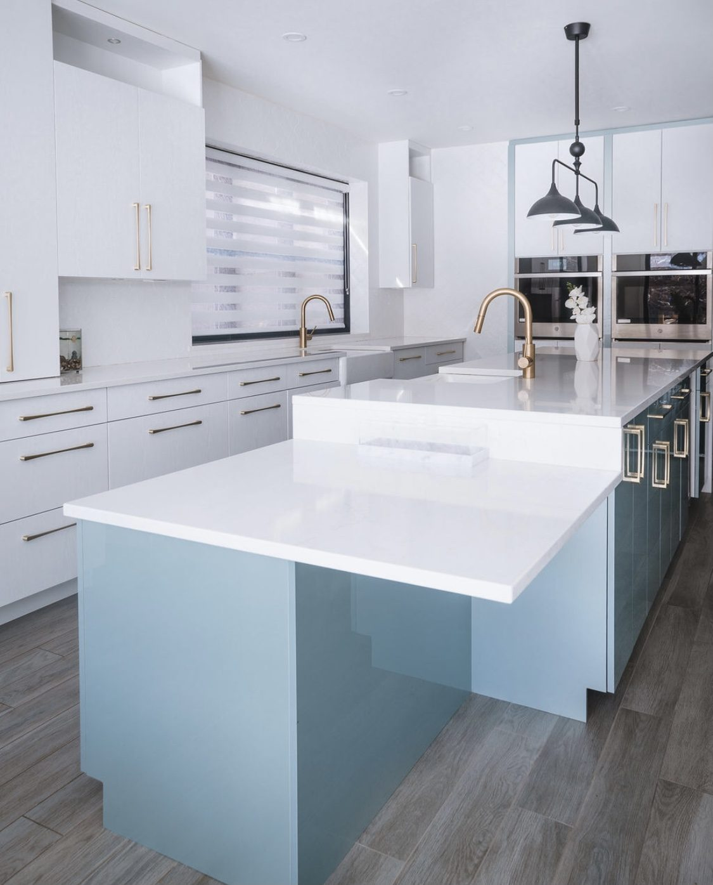

Interior design & decoration
Quiet, considered rooms — made for the way you live.
RMDesign is an interior design and decorating studio creating calm, enduring homes. Every project is carefully planned, designed in detail, and built to last.

Recent work
Select any image to open the full gallery

Featured project
The White Kitchen
A bright, hard-working kitchen built around a long run of white flat-panel cabinetry. Brushed-brass bar pulls and a gooseneck faucet add warmth, while quartz counters, a pale blue-glass backsplash and island, and white arabesque tile keep the room light, soft and easy to live with.

Warm brass, cool glass and a great deal of quiet white: a kitchen that stays calm on its busiest day.

Portfolio
Work
A selection of recent projects. Select any project to view its full gallery.

What we do
Design for the whole home, from first sketch to final cushion.
We're a small studio working closely with a handful of clients each year. Whether it's a single room or a full renovation, we bring the same attention to proportion, light and material, and we stay with the project until it's finished.
Interior design
Space planning, layouts, lighting and finishes for renovations and new builds.
Kitchens & baths
Cabinetry, hardware, surfaces and tile for the rooms that work hardest.
Decorating & furnishing
Furniture, fabrics, window treatments, rugs and art, sourced and placed.
Project coordination
We work alongside builders and trades to keep every detail right on site.
How we work
Plan Design Build
A clear, three-part process keeps decisions simple and the finished room true to the plan.
-
01
Plan
We start by listening. We visit your home, talk through how you live, and agree on scope, priorities, budget and timeline.
- Site visit & measurements
- Brief and budget
- Timeline
-
02
Design
We develop layouts, materials and finishes, refining them with you until every detail feels right, before anything is ordered or built.
- Layouts & elevations
- Materials & finishes
- Furniture & lighting
-
03
Build
We coordinate with builders and trades, track orders and check the details on site, right through to the final styling.
- Trade coordination
- Site visits
- Installation & styling
Let's talk about your space.
Tell us a little about your home and what you have in mind. We'll be in touch to arrange a first conversation.
- To be confirmed
- Phone
- To be confirmed
- Studio
- To be confirmed